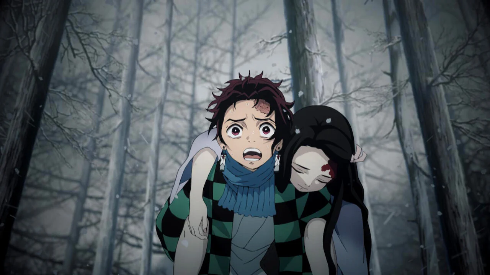

O anime shonen Kimetsu no Yaiba, ou Demon Slayer (comumente chamado no Ocidente), é uma obra criada por Koyoharu Gotouge. Gotouge é a autora do mangá original, que foi serializado na revista Weekly Shonen Jump da editora Shueisha de fevereiro de 2016 a maio de 2020. A história do anime segue de perto a narrativa do mangá, sendo adaptada com grande fidelidade pelo estúdio Ufotable para a versão animada.
O anime ganhou uma adaptação em anime que foi anunciada em junho de 2018. O primeiro episódio de do anime Kimetsu no Yaiba foi transmitido pela emissora japonesa Tokyo MX em 6 de abril de 2019. Além de Tokyo MX, outras emissoras japonesas, como GTV, GYT e BS11, também começaram a transmitir o anime na mesma época. A série rapidamente ganhou popularidade e foi posteriormente disponibilizada em plataformas de streaming internacionais como Crunchyroll e Funimation. No Brasil, o primeiro episódio do anime Kimetsu no Yaiba foi transmitido pela plataforma de streaming Crunchyroll, que possui os direitos de distribuição do anime na América Latina. A transmissão ocorreu simultaneamente à estreia no Japão. Desde então, "Demon Slayer" tem sido um dos animes mais populares na região, disponível também em outras plataformas como a Netflix.
O estúdio responsável pela produção do anime Kimetsu no Yaiba é o estúdio Ufotable. Este estúdio é conhecido por sua alta qualidade de animação e também por adaptar outras obras populares como Fate/stay night: Unlimited Blade Works e Fate/Zero. A Ufotable é reconhecida por seu trabalho meticuloso e detalhado na animação do anime Kimetsu no Yaiba, o que contribuiu significativamente para o sucesso da série, sendo um dos animes de melhor animação existente.
Desde a sua primeira transmissao, o anime tem sido muito aclamado e considerado como um dos melhores animes da nova geração. A adaptação em anime quebrou recordes impressionantes:
Bilheteria do filme Mugen Train: O filme "Demon Slayer: Mugen Train" quebrou recordes de bilheteria no Japão, tornando-se o filme de anime de maior bilheteria na história do Japão, superando obras como "A Viagem de Chihiro".
Popularidade e Reconhecimento Internacional: O anime ganhou uma enorme popularidade não apenas no Japão, mas também internacionalmente, tornando-se um dos animes mais assistidos e discutidos em todo o mundo.

Protagonistas Tanjiro Kamado e Nezuko Kamado
A história de Kimetsu no Yaiba se passa no Japão durante a era Taisho (início do século XX) e gira em torno de Tanjiro Kamado, um jovem bondoso e trabalhador que vive com sua família nas montanhas. Um dia, após retornar de uma viagem para vender carvão, Tanjiro encontra sua família brutalmente assassinada por demônios, com exceção de sua irmã mais nova, Nezuko, que foi transformada em um demônio.
Determinado a vingar sua família e encontrar uma maneira de curar Nezuko, Tanjiro se torna um caçador de demônios, conhecido como "Demon Slayer". Ele se junta à organização dos Caçadores de Demônios e embarca em uma jornada perigosa para derrotar os demônios, proteger os inocentes e descobrir uma cura para Nezuko.
Ao longo de sua jornada, Tanjiro enfrenta diversos desafios, encontra aliados poderosos e descobre segredos sobre os demônios e sua própria linhagem. Ele também desenvolve técnicas especiais de respiração que aumentam suas habilidades de combate e ampliam suas capacidades físicas. Cada técnica envolve uma forma específica de respiração profunda e controlada, conhecida como "Respiração Total Concentrada". Essas técnicas são divididas em diferentes estilos de combate, como a Respiração da Água e a Respiração do Fogo, cada uma com suas próprias características e habilidades únicas. Cada Caçador de Demônios utiliza uma espada especial, a "Nichirin Blade", que é colorida e possui propriedades especiais conforme a habilidade do usuário. Ao longo da história, os personagens principais, como Tanjiro, aprendem e aprimoram suas técnicas de respiração através de treinamento intenso e experiências de batalha, permitindo-lhes enfrentar demônios poderosos e proteger os inocentes.
Em resumo, Kimetsu no Yaiba é uma jornada épica de luta contra demônios, crescimento pessoal e descoberta de poderes ocultos, tudo isso envolto em uma narrativa emocionante e visualmente deslumbrante que cativou uma vasta audiência global.
Poster da primeira temporada do anime Kimetsu no Yaiba
A primeira temporada do anime "Demon Slayer" é chamada Demon Slayer: Kimetsu no Yaiba. Ela adapta dois arcos principais do mangá, que são essenciais para o desenvolvimento inicial da história e dos personagens: Arco da Seleção Final (Final Selection Arc) e Arco da Montanha Natagumo (Natagumo Mountain Arc). A animação de alta qualidade e a trilha sonora foram amplamente elogiadas. O episódio 19, em particular, destacou a qualidade da série. A temporada impulsionou a popularidade do mangá e gerou uma base de fãs global. A primeira temporada estabelece a base para a jornada de Tanjiro, introduzindo personagens principais e preparando o terreno para a luta contínua contra os demônios.
No Arco da Seleção Final (Final Selection Arc), que é o arco inicial, Tanjiro Kamado passa por um treinamento rigoroso com o ex-Demon Slayer e mestre da Respiração da Água Sakonji Urokodaki. Durante este período, Tanjiro aprende técnicas de combate e aprimora suas habilidades de respiração.
Após o treinamento, Tanjiro é enviado para a Montanha Sagrada, onde a Seleção Final ocorre. Esta montanha é um local perigoso, repleto de armadilhas e habitado por demônios. Durante a Seleção Final, os candidatos a Demon Slayer enfrentam demônios que foram capturados e colocados lá como parte do teste. A missão de Tanjiro é sobreviver à noite na montanha e derrotar um demônio particularmente poderoso, conhecido como o Demônio de Tamoe. Tanjiro demonstra sua coragem, determinação e habilidades de combate durante a Seleção Final, enfrentando adversidades significativas para provar seu valor como um futuro espadachim Demon Slayer.
Aqueles que completam com sucesso a Seleção Final são reconhecidos como Demon Slayers oficiais e recebem suas lâminas Nichirin, armas especiais que podem ser usadas para combater demônios. Este é um passo crucial na jornada de cada personagem principal em "Demon Slayer", marcando sua entrada oficial na Demon Slayer Corps e sua dedicação à causa de proteger a humanidade.
O Arco da Montanha Natagumo (Natagumo Mountain Arc) é o ponto central da primeira temporada. Tanjiro, junto com seus companheiros Zenitsu e Inosuke, é enviado para investigar relatos de demônios na Montanha Natagumo. Lá, eles descobrem uma família de demônios aranha liderada por Rui, um dos Doze Kizuki (os demônios mais poderosos sob o comando de Muzan Kibutsuji). A batalha contra Rui e seus subordinados é intensa e desafiadora, testando as habilidades e os limites de Tanjiro e seus amigos.
Este arco é um ponto alto da primeira temporada, conhecido por sua intensa ação, desenvolvimento de personagens e revelações emocionais, contribuindo significativamente para a profundidade e o apelo emocional da série.
Demon Slayer: Kimetsu no Yaiba the Movie: Mugen Train
Poster do filme Demon Slayer: Mugen Train
Demon Slayer: Mugen Train (também conhecido como Demon Slayer: Kimetsu no Yaiba the Movie: Mugen Train) é um filme de animação japonês de 2020 dirigido por Haruo Sotozaki e produzido pelo estúdio Ufotable. O filme é uma continuação direta da primeira temporada do anime "Demon Slayer: Kimetsu no Yaiba" e adapta o arco "Mugen Train" do mangá escrito por Koyoharu Gotouge
A história segue Tanjiro Kamado, sua irmã Nezuko, e seus amigos Zenitsu Agatsuma e Inosuke Hashibira, que embarcam no Trem Infinito (Mugen Train) para investigar uma série de desaparecimentos misteriosos. Eles são acompanhados pelo Pilar das Chamas, Kyojuro Rengoku, um dos espadachins mais poderosos da organização dos Caçadores de Demônios.
No trem, eles descobrem que os passageiros estão sendo atacados por Enmu, um dos Doze Kizuki, uma elite de demônios que serve diretamente ao principal antagonista da série, Muzan Kibutsuji. Enmu possui a habilidade de manipular sonhos, colocando todos em um sono profundo para devorar suas almas. Tanjiro e seus amigos precisam lutar para sobreviver e proteger os passageiros, enfrentando desafios tanto nos sonhos quanto na realidade.
Mugen Train foi um enorme sucesso de bilheteria, tornando-se o filme mais rentável de todos os tempos no Japão e um dos filmes de anime mais bem-sucedidos globalmente. Ele arrecadou mais de 500 milhões de dólares mundialmente. A combinação de uma animação impressionante, uma história emocionalmente envolvente e cenas de ação intensas contribuiu para sua popularidade.
A qualidade da animação é um dos aspectos mais elogiados de Mugen Train. O estúdio Ufotable é conhecido por suas sequências de ação fluidas e efeitos visuais deslumbrantes. As cenas de luta são particularmente notáveis pela coreografia e pelo uso de técnicas avançadas de animação.
Demon Slayer: Mugen Train é um marco no cinema de animação, tanto em termos de sucesso comercial quanto de impacto cultural. Ele continua a saga de Tanjiro e seus amigos de maneira emocionante e visualmente deslumbrante, cativando audiências ao redor do mundo. Para os fãs da série, o filme é uma experiência imperdível que aprofunda a história e os personagens, preparando o terreno para os próximos arcos do anime.
Demon Slayer: Kimetsu no Yaiba - Entertainment District Arc
Poster da segunda temporada do anime Kimetsu no Yaiba
A segunda temporada de "Demon Slayer: Kimetsu no Yaiba" é dividida em dois arcos principais: "Arco do Trem Infinito" (Mugen Train Arc) e "Arco do Distrito de Entretenimento" (Entertainment District Arc). Esta temporada foi ao ar de outubro de 2021 a fevereiro de 2022 e continua a narrativa emocionante e visualmente deslumbrante da série.
A segunda temporada do anime também incluiu uma versão serializada do Arco do Trem Infinito Mugen Train Arc antes de avançar para o Arco do Distrito de Entretenimento. A adaptação em formato de série para a segunda temporada do anime permitiu uma exploração mais detalhada dos personagens e eventos. Além disso, isso facilitou a transição para os novos episódios do Arco do Distrito de Entretenimento para aqueles que poderiam não ter assistido ao filme. A inclusão do Arco do Trem Infinito na segunda temporada foi uma maneira de assegurar que todos os fãs, independentemente de terem visto o filme ou não, estivessem na mesma página antes de seguir para o próximo arco. Isso também proporcionou uma experiência mais rica com conteúdo adicional e um episódio de introdução especial, agregando valor tanto para novos espectadores quanto para aqueles que já conheciam o filme.
Após os eventos do Trem Infinito, Tanjiro e seus amigos se recuperam e recebem uma nova missão. Eles se juntam ao Pilar do Som, Tengen Uzui, para investigar atividades demoníacas no Distrito de Entretenimento de Yoshiwara. Para infiltrar-se no distrito, Tanjiro, Zenitsu e Inosuke se disfarçam como meninas e trabalham em diferentes casas de entretenimento.
Eles descobrem que Daki, um dos Seis Luas Superiores, está por trás das atividades demoníacas no distrito. A luta contra Daki e seu irmão, Gyutaro, revela novos desafios e profundidades emocionais para os personagens. Este arco destaca a importância do trabalho em equipe e a força de vontade dos caçadores de demônios.
A segunda temporada mantém o alto padrão de qualidade da animação que Ufotable estabeleceu. As cenas de ação são dinâmicas e visualmente impressionantes, com uma combinação de técnicas tradicionais e CGI que criam sequências de luta fluidas e emocionantes. A trilha sonora também continua a ser um ponto forte, complementando perfeitamente as cenas e intensificando as emoções.
A segunda temporada de "Demon Slayer: Kimetsu no Yaiba" expande a história de maneira emocionante, com arcos narrativos intensos e desenvolvimento de personagens. Os arcos do Trem Infinito e do Distrito de Entretenimento são fundamentais para a progressão da série, oferecendo aos espectadores batalhas memoráveis, momentos emocionantes e uma animação de tirar o fôlego.
Demon Slayer: Kimetsu no Yaiba - Swordsmith Village Arc
Poster da terceira temporada do anime Kimetsu no Yaiba
A terceira temporada do anime "Demon Slayer: Kimetsu no Yaiba" é oficialmente intitulada "Demon Slayer: Kimetsu no Yaiba - Swordsmith Village Arc" (ou "Kimetsu no Yaiba: Katanakaji no Sato-hen" em japonês). Esta temporada adapta o arco da Vila dos Ferreiros do mangá de Koyoharu Gotouge e continua a seguir as aventuras de Tanjiro Kamado e seus amigos.
Nesta temporada, após os eventos intensos no Distrito de Entretenimento, Tanjiro viaja para a Vila dos Ferreiros para reparar sua espada danificada. Enquanto está na vila, ele se junta a outros Caçadores de Demônios, incluindo os Hashiras Mitsuri Kanroji (Pilar do Amor) e Muichiro Tokito (Pilar da Névoa). Eles enfrentam novos e poderosos demônios, incluindo alguns dos Doze Kizuki, em batalhas intensas. Este arco é significativo para o desenvolvimento de Tanjiro e seus aliados, bem como para a introdução de novas técnicas e habilidades.
O Arco da Vila dos Ferreiros é significativo para o desenvolvimento dos personagens e do enredo. Ele explora mais profundamente a história e as habilidades dos Hashiras, apresenta novas técnicas de combate e revela mais sobre a organização dos Caçadores de Demônios. Além disso, Tanjiro faz importantes descobertas sobre sua própria espada e habilidades.
A terceira temporada mantém o padrão elevado de qualidade de animação que é característico do estúdio Ufotable. As cenas de luta são dinâmicas e visualmente impressionantes, continuando a atrair e encantar os fãs da série. O estúdio Ufotable continua a ser responsável pela animação, mantendo o alto padrão de qualidade visual e de produção. As cenas de luta são dinâmicas, bem coreografadas e visualmente impressionantes, utilizando uma combinação de animação tradicional e CGI. A trilha sonora também continua a ser um destaque, intensificando as emoções e a tensão das cenas.
Demon Slayer: Kimetsu no Yaiba - Swordsmith Village Arc continua a saga de Tanjiro Kamado com novas aventuras e desafios. A terceira temporada oferece uma combinação emocionante de ação, desenvolvimento de personagens e narrativa envolvente, mantendo os espectadores cativados e ansiosos por mais.
Demon Slayer: Kimetsu no Yaiba - Hashira Training Arc
Poster da quarta temporada do anime Kimetsu no Yaiba
A quarta temporada do anime Demon Slayer: Kimetsu no Yaiba é intitulada "Demon Slayer: Kimetsu no Yaiba - Hashira Training Arc" (ou "Kimetsu no Yaiba: Hashira Geiko-hen" em japonês).
Após os eventos intensos da Vila dos Ferreiros, Tanjiro e seus amigos continuam a treinar e se preparar para futuras batalhas contra os demônios. Este arco se concentra no treinamento rigoroso que Tanjiro e outros Caçadores de Demônios recebem dos Hashira (Pilares) para aprimorar suas habilidades e aumentar suas chances de sobreviver e vencer as batalhas contra os poderosos demônios que ainda estão por vir.
O Arco de Treinamento dos Hashira é vital para o desenvolvimento dos personagens principais, especialmente Tanjiro, Zenitsu e Inosuke. Este arco prepara os Caçadores de Demônios para os desafios futuros, fortalecendo-os tanto física quanto mentalmente. Ele também oferece uma visão mais profunda sobre as habilidades e personalidades dos Hashira, tornando-os personagens mais completos e tridimensionais.
O alto padrão de qualidade na animação persiste, com cenas de treinamento intensas e emocionantes, além de belas paisagens e design de personagens detalhado. A trilha sonora continua a complementar a narrativa, intensificando as emoções e a tensão das cenas.
Atualmente, o anime se encontra neste arco, com cenas extendidas para complementar a narrativa e esclarecer dúvidas sem respostas no mangá. Apesar de ser um arco curto, ele é a ponte para o Arco da Fortaleza Dimensional Infinita (Infinity Castle Arc), que é o arco mais esperado e de grande expectativa de todo o anime. Ainda no final da quarta temporada, teremos Tanjiro, os Hashiras e outros personagens entrando no castelo infinito servindo como introdução para o Arco da Fortaleza Dimensional Infinita.